A 4 kg lander 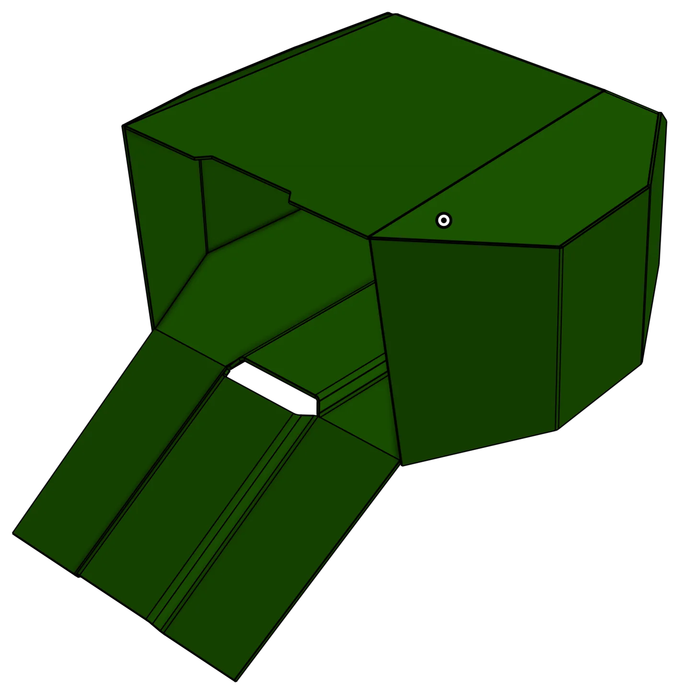 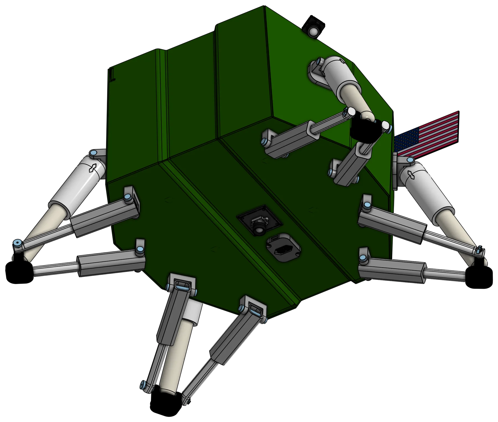 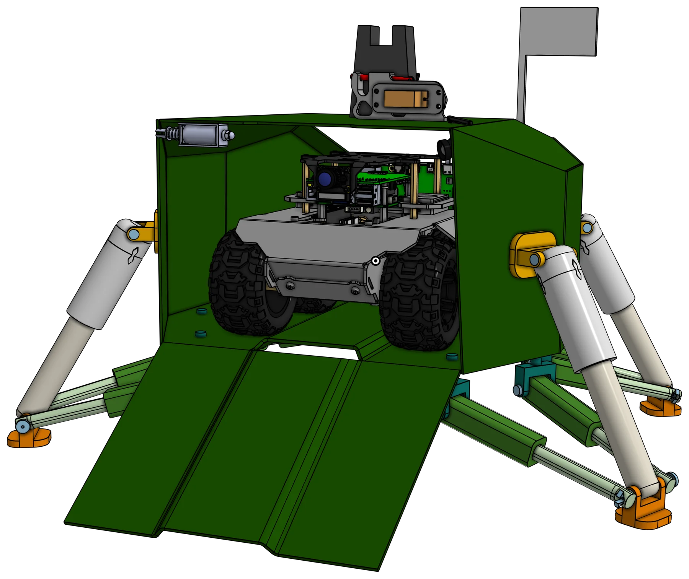
The drop, scrolled
-
40 m
Release
The drone lets go. Telemetry starts at 10 Hz: acceleration, pressure, inside and outside temperature, and CO₂ once a second.
-

Curiosity under its parachute, seen from orbit in 2012. NASA/JPL/University of Arizona. 38 m
Chute out
A servo trips a sear and a spring piston fires the parachute out of its canister. Ours opens a few metres below the drone, not eleven kilometres up.
-
30 m
Legs down
Two seconds after release a solenoid lets go and the spring-loaded legs swing out into a wide stance.
-
Perseverance's own descent camera, Jezero Crater, 2021. NASA/JPL-Caltech. 15 m
Live video
A RunCam streams the fall to the ground station on 5.8 GHz. Commands and telemetry ride a separate HC-12 radio on 433 MHz, so one can fail without the other.
-
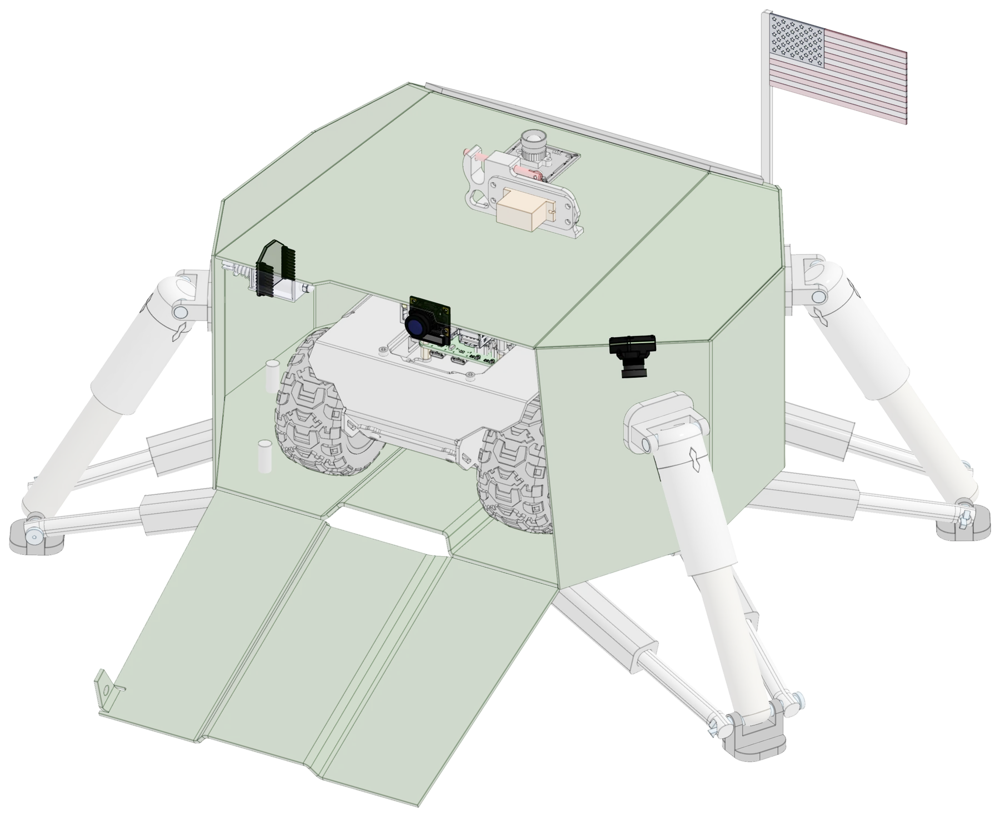
2.5 m
Cut away
Between 2 and 3 metres the parachute lets go, so it can't drape over the lander or drag it sideways.
-
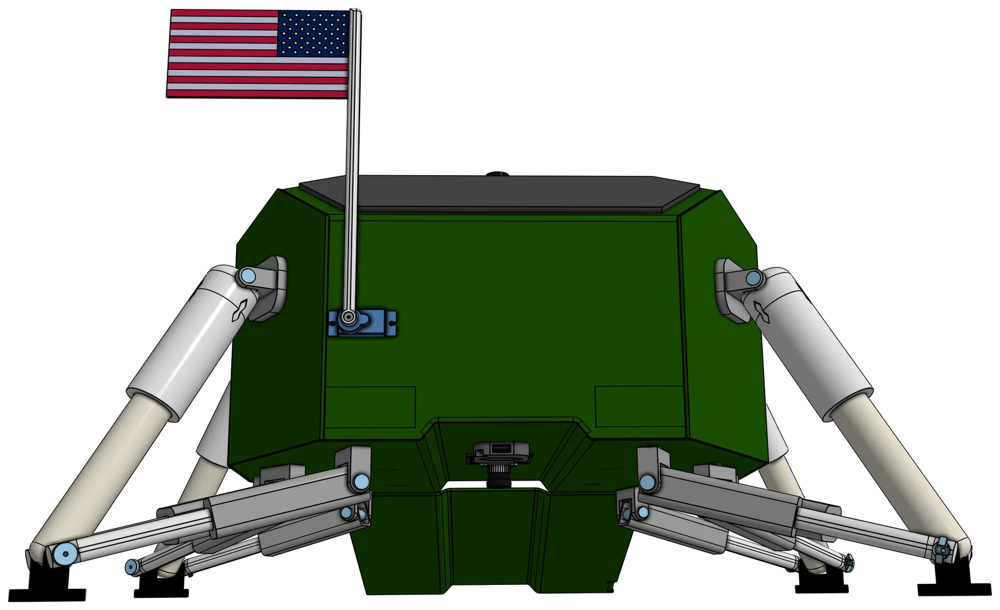
0 m
Touchdown
Upright, on its legs, under 8 m/s. Printed honeycomb in the struts crushes to soak up the hit.
-
T+10:00
Ramp down
On the GO TO DEPLOY command, or on its own after ten minutes, a solenoid pulls a pin and gravity lowers the ramp.
-
T+11:00
Rover out
A Raspberry Pi 4 rover drives itself at least a metre clear and shoots a 360° panorama of the landing site.
-
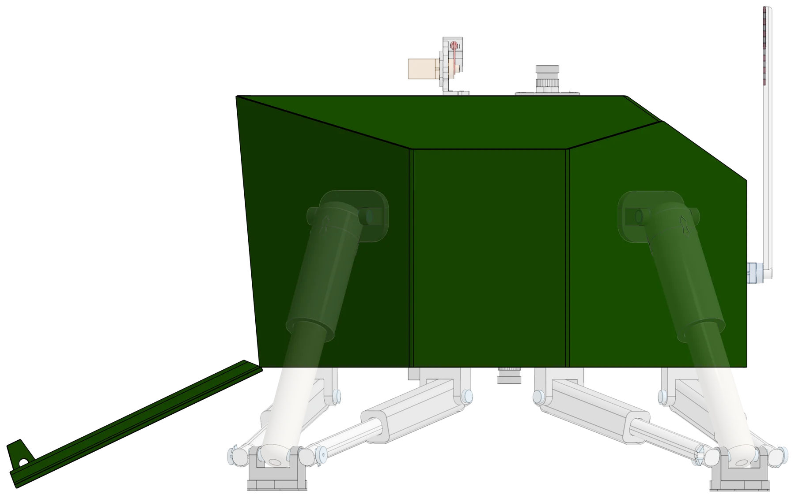
T+13:00
Flag up
A servo swings the flag to vertical. A minute later the rover turns round and photographs the lander. Mission complete.
Size the parachute yourself
The catch is the last few metres. Once the chute is cut, the lander free-falls, and 2.5 m of free fall alone ends at 7 m/s. So the chute has to slow us almost to walking pace before it lets go. These are the equations from our proposal, running live.
- 3.8 m/s under the canopy
- 128 J for the legs to absorb
- 3.14 m² of canopy
V under canopy = √(2mg / ρ·Cd·A), then V at touchdown = √(V² + 2gh) from the cut-away height. Air density 1.2 kg/m³, sea level at Kawainui. A first-order estimate: no swing, no wind, no opening shock.
The machine
The shell  is one flat sheet of aluminium, folded. Legs crush printed honeycomb, a pin drops the ramp and a rover drives out.
is one flat sheet of aluminium, folded. Legs crush printed honeycomb, a pin drops the ramp and a rover drives out.
Lander
Riveted 5052 aluminium shell. Three cameras, sensors and the flight computer in one bay; telemetry at 10 Hz, CO₂ at 1 Hz.
Caleb Borengasser, Owen Bramley
Deployables
Spring-fired parachute with a cut-away, tripod legs on crushable honeycomb, a gravity ramp on a solenoid pin and a servo flag.
Leanelyn Tolentino, Julien Wooten, Ethan Santiago, Gabriel Figueredo, Max Sibayan, Peter Simeon
Rover
A Waveshare RaspRover: four driven 80 mm wheels, Raspberry Pi 4 and ESP32, driving itself and imaging in 360°.
Zachary Gregorio
Ground
HC-12 radio at 433 MHz for commands, RunCam WiFiLink at 5.8 GHz for video, all watched from a COSMOS ground station.
Kai Mitchell
Made by hand, here in Mānoa
Almost everything that isn't a circuit board, we make ourselves: from sheet, from filament, from rivets. Point at a step to see it.
-
Cut
Every panel of the shell starts flat, laid out as one pattern on 0.125 in 5052-H32 sheet.
-
Fold
Bent on a brake into the chamfered box you see everywhere on this page.
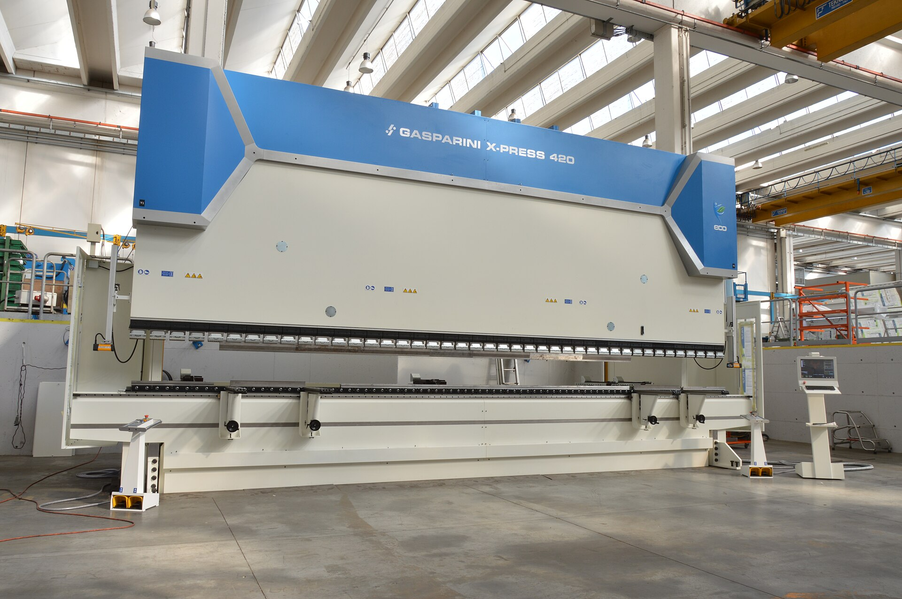
-
Rivet
Panels joined with blind rivets: light, strong, and fixable in a field.
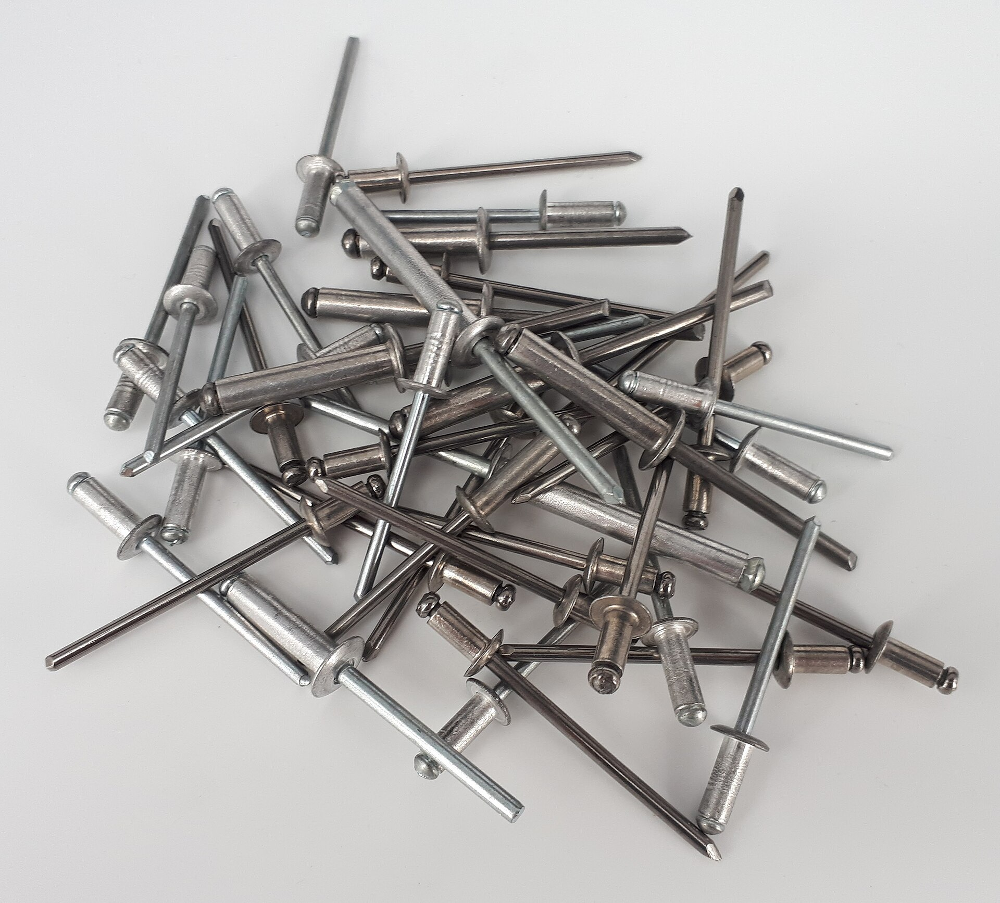
-
Print
Honeycomb crush cores, leg feet, brackets and the flag, printed and drop-tested until one survives.
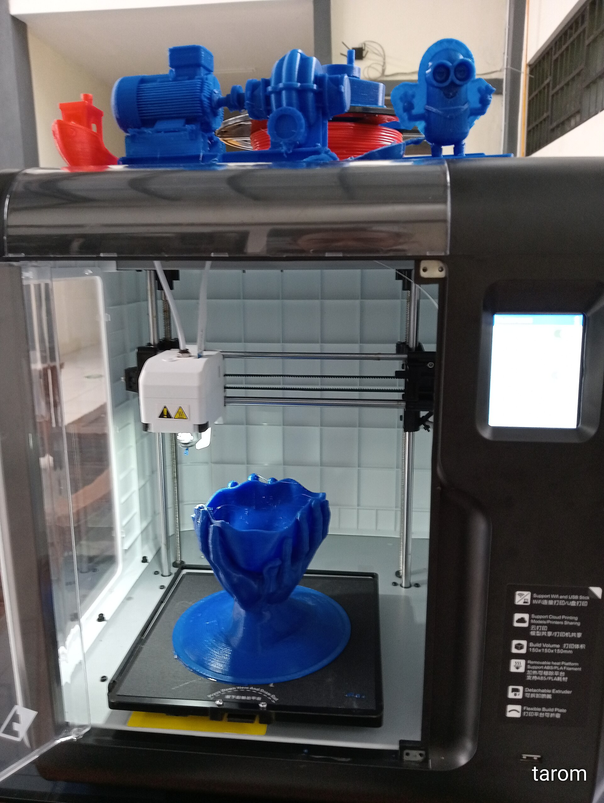
-
Wire
A Raspberry Pi 4 and four sensor boards packed into a bay the size of a paperback.
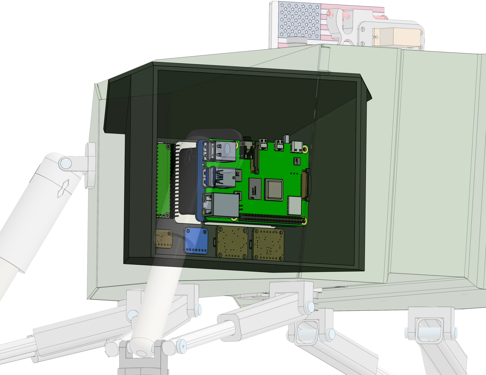
-
Drop
Then up under a drone at Kawainui, and down again, until the numbers hold.

Three tries at one box

Sketched
September. A tall box on stick legs, the rover parked at the door.
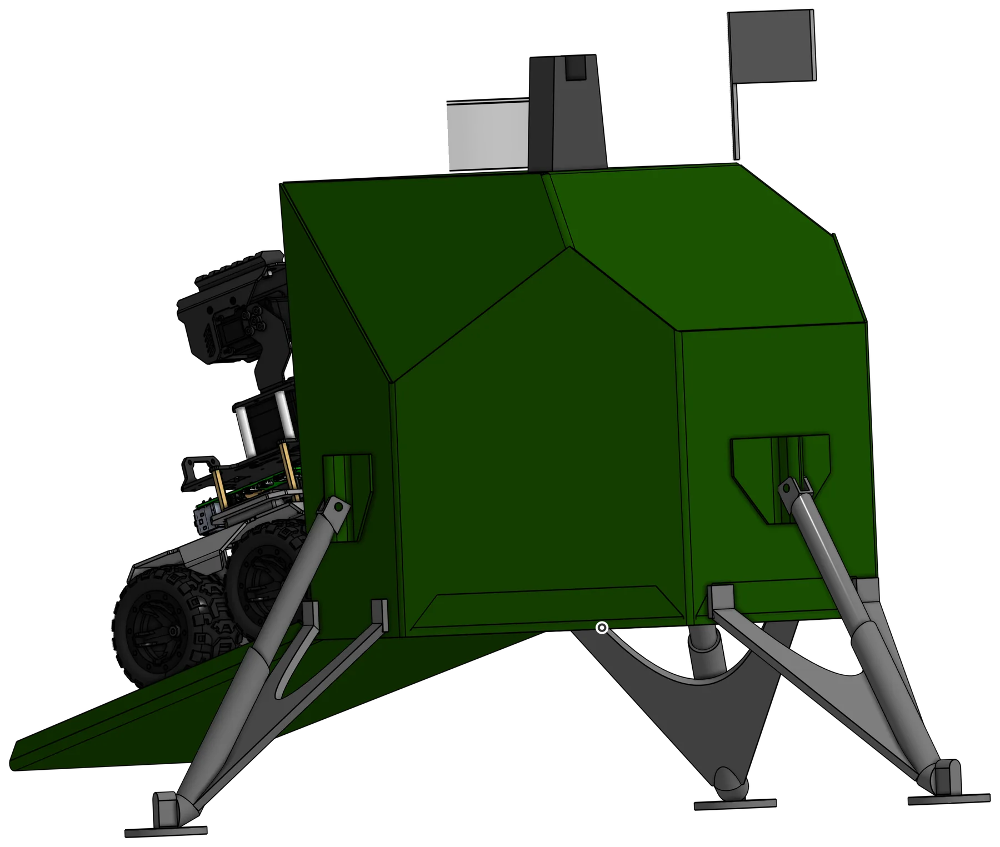
Proposed
October. Wider and lower, gusseted legs, a camera mast and a flag.
Detailed
November. Folded panels, telescoping struts, printed feet, every board placed.
Every angle
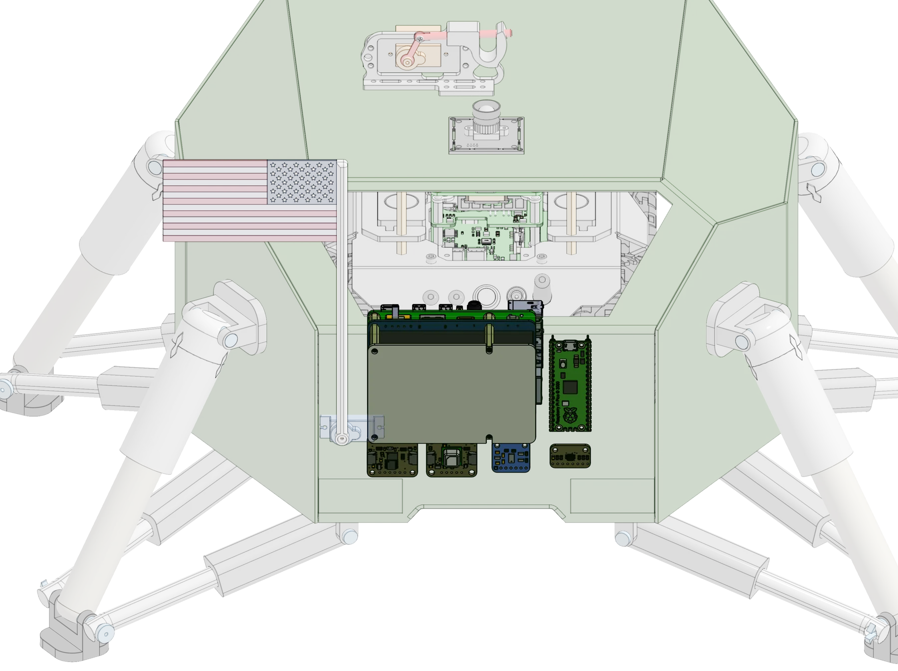
What it has to hit
Release height under the drone. The brief allows 30 to 40.
Estimated mass against a 6 kg limit: a 32% margin.
Of the $3,000 awarded by UH Mechanical Engineering.
- ≤ 8 m/sat touchdown
- 2–3 mchute cut-away
- 10 Hztelemetry
- 1 mrover drives, minimum
Eleven people, one box
- Owen BramleyProject manager, lander member
- Gabriel BansilSystems integrator
- Kai MitchellFiscal officer, ground and comms lead
- Leanelyn TolentinoDeployables lead, ramp and flag
- Caleb BorengasserLander lead
 Zachary GregorioRover lead
Zachary GregorioRover lead Ethan SantiagoDeployables member, parachute
Ethan SantiagoDeployables member, parachute Julien WootenDeployables member, landing legs
Julien WootenDeployables member, landing legs
Plus Gabriel Figueredo, Max Sibayan and Peter Simeon, Vertically Integrated Projects members on the deployables team, and Dr. Sorensen, our instructor and the reason for the name.
Talk to the teamCome watch it fall
Spring 2027 at Kawainui Model Airplane Field in Kailua. Sponsors, students and the curious are all welcome.
Ask for the drop date